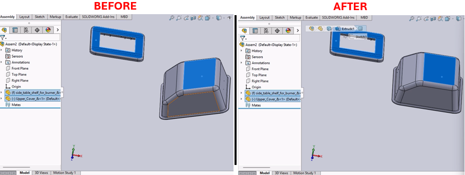

Mate Addition and Rebuild Macro for SolidWorks
Description
This macro automates the addition of a specific type of mate (e.g., coincident mate) to a selected component in an assembly document. After adding the mate, it forces a rebuild of the assembly to ensure that all changes take effect.
System Requirements
- SolidWorks Version: SolidWorks 2014 or newer
- Operating System: Windows 7 or later
Pre-Conditions
Note
- An assembly document must be open in SolidWorks.
- The component to which the mate is to be applied must be selected prior to running the macro.
Results
Note
- Adds a specified mate to the selected component.
- Forces a rebuild of the assembly to reflect the new mate addition.
- Clears any selections to tidy up the workspace post-operation.
Steps to Setup the Macro
Prepare the Assembly Document:
- Open the assembly document in SolidWorks.
- Select the component to which you want to apply the mate.
Load and Run the Macro:
- Open the SolidWorks VBA editor by pressing (
Alt + F11). - Insert a new module and paste the provided macro code into this module.
- Run the macro directly from the VBA editor or save and run it from within SolidWorks under Tools > Macro > Run.
- Open the SolidWorks VBA editor by pressing (
Using the Macro:
- The macro will automatically add the specified mate to the selected component.
- After execution, the assembly is rebuilt to apply the changes, and the selection is cleared.
VBA Macro Code
' Disclaimer:
' The code provided should be used at your own risk.
' Blue Byte Systems Inc. assumes no responsibility for any issues or damages that may arise from using or modifying this code.
' For more information, visit [Blue Byte Systems Inc.](https://bluebyte.biz).
Option Explicit
' Main subroutine to add a coincident mate to the selected component in an assembly
Sub main()
' Declare and set SolidWorks application and document variables
Dim swApp As SldWorks.SldWorks ' SolidWorks application object
Set swApp = Application.SldWorks
Dim Part As SldWorks.ModelDoc2 ' Active document object
Set Part = swApp.ActiveDoc
' Validate if a document is loaded
If Part Is Nothing Then
MsgBox "No document is open.", vbExclamation, "Error"
Exit Sub ' Exit if no document is loaded
End If
' Declare variables for operations
Dim boolstatus As Boolean ' Status of the operation (not used directly here)
Dim longstatus As Long ' Long status to capture errors or warnings
Dim longwarnings As Long ' Long warnings (not used directly here)
Dim Feature As Object ' Object for the newly added mate
' Add a coincident mate to the selected component
' Parameters:
' - Mate type: 3 (Coincident)
' - Alignment: 2 (Aligned)
' - Flip flag: False (No flipping)
' - Distance/Angle: All set to 0 for this mate type
' - Long status: Captures the success or failure of the mate addition
Set Feature = Part.AddMate2(3, 2, False, 0, 0, 0, 1, 1, 0, 0, 0, longstatus)
' Check if the mate was successfully added
If longstatus <> 0 Then
MsgBox "Failed to add mate. Status code: " & longstatus, vbCritical, "Error"
Exit Sub
End If
' Force a rebuild to update the assembly with the new mate
Part.ForceRebuild
' Clear any remaining selections to ensure a clean state
Part.ClearSelection2 True
' Notify the user of successful operation
MsgBox "Coincident mate added successfully.", vbInformation, "Success"
End Sub
Macro
You can download the macro from here
Customization
Need to modify the macro to meet specific requirements or integrate it with other processes? We provide custom macro development tailored to your needs. Contact us.